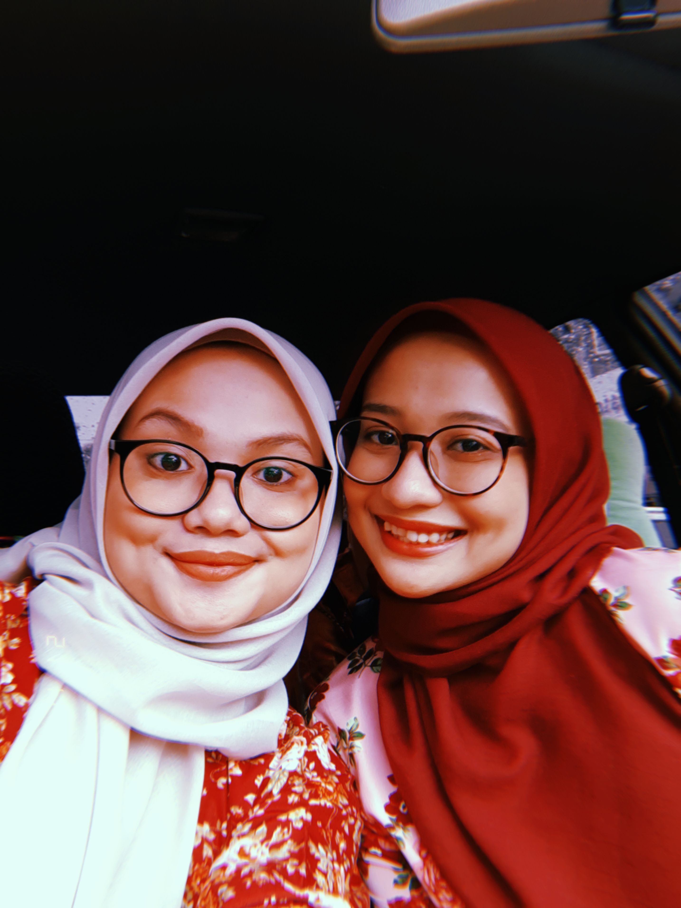
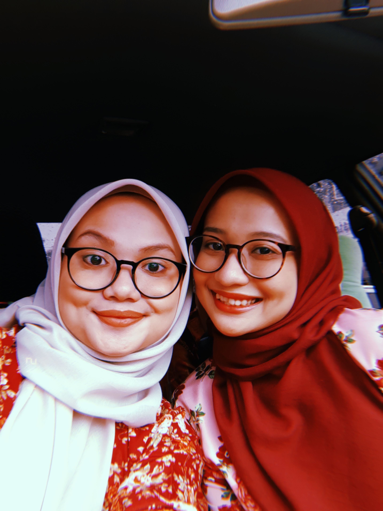

My King and my Queen of the house. Mohammad bin Embong is Abah's full name. He is 64 years old this year, yet he still looks robust and gorgeous. He is a retired man whose full-time job it is to follow my mother at home and make her the happiest lady on the planet. At his finest, Abah knows how to win our hearts. He is the one man who has never broken my heart. Let us now proceed to my one and only Queen. Roziah binti Omar is Mama's full name. She is 60 years old and a stay-at-home mom. The best thing about Mama, well, everything about her is amazing, but when it comes to her cooking, you will not be able to refuse and say no. She is an excellent cook, baker, and seamstress. Wow, she's a perfect and talented woman, and I'm in awe of her.
 
Let's meet my siblings now! I am the youngest of five siblings. I have three brothers and one older sister. My brothers aren't photogenic, so it's just me and my sister. Okay, so three of my brothers are already working, and two of them are married. The other is waiting for their princess to take a step back. When it comes to money and food, my brothers, who also happen to be my banker, will never let us down. They will make whatever wish we have come true. My sister means everything to me. Many people assumed we were twins, but we are not. We share nearly everything, even our clothing and shawls. That isn't the finest thing of having a sister, but it's OK. She is the joker, the doctor, the antagonist, and anything else you can think of. She understands how to make me happy, yet she can also be rather unpleasant at times. She is, without a doubt, the finest thing that has ever happened in my life.